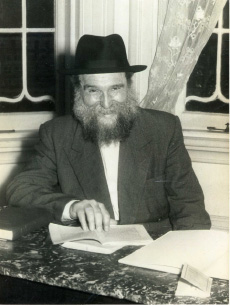

From Ashlag to Lubavitch
The curriculum for the Jewish subjects was based on textbooks that were bought from R’ Moshe Kantor, R’ Moshe Zalman Feiglin’s son-in-law. These books were brought from religious schools in Eretz Yisroel and the US.

MELBOURNE JEWS CONNECT TO THE REBBE
With the development of Chabad schools in Melbourne, the Jews there became acquainted with the Rebbe’s work. Slowly, they began corresponding with Beis Chayeinu. For example, in a letter dated 27 Teves, R’ Zalman wrote to the Rebbe about a woman who registered her five and a half year old for first grade. She wanted to write to the Rebbe because she wanted to know the Rebbe’s opinion regarding her doctors’ instructions that she undergo an operation.
Her husband was a tailor and did not feel well for a long time and had missed work, so the burden of supporting the family fell on her. The doctors said the operation wasn’t urgent, but if she didn’t do it, she would have to work less and she would be unable to support her family.
When R’ Zalman asked her how she had heard of the Rebbe, she said that her brother-in-law had met R’ Chaim who was fundraising for the yeshiva, and after speaking to an acquaintance, encouraging him to help R’ Chaim, he and R’ Chaim developed a nice relationship. R’ Chaim told him about the Lubavitcher Rebbe and about miracles he had done.
After a while, her brother-in-law became sick and his wife, her sister, called R’ Chaim to ask him to send a request for a bracha to the Rebbe for her husband. R’ Chaim, who wanted them to have a direct connection with the Rebbe, suggested that she write or send a telegram herself. She did so, and after receiving the Rebbe’s bracha he recovered. Not only that, but a daughter was born to them after many years of not having children.
As per her request, R’ Zalman wrote the whole story to the Rebbe. In the reply letter that the Rebbe sent him on 8 Shevat, he referred to the request for a bracha and said that although this was a routine operation that doctors did in such circumstances, first of all, he had not written why an operation was needed and another approach wasn’t used, and second, since this was an operation that raised Halachic problems, they should consult with a rav. The Rebbe concluded with a bracha that Hashem send her a refua shleima.
LIMUDEI KODESH ARE FIRST
On Tuesday, 9 Shevat, the first Chabad school opened in Melbourne. This school, which grew into an institution of hundreds of children, opened with ten children in preschool and nine children in first grade. At the same time, the afternoon Hebrew school continued to grow with seventy children attending every day.
As mentioned in earlier chapters, R’ Zalman knew that the academic level was very important to the parents and he made every effort to hire a talented teacher with a diploma. After advertising in the Melbourne newspaper “The Age,” Mrs. Rintel came and presented herself for the job. She made a very good impression and R’ Zalman hired her to teach the first grade secular studies.
Rumor had it that Mrs. Rintel’s grandfather was Jewish. He came to Australia before the First World War and sadly intermarried and ended his Jewish line. That was the fate of most of the Jews who went to Australia at that time.
R’ Zalman made it clear to Mrs. Rintel that this was a Jewish school and only part of the school day would be devoted to secular studies. She maintained that in order to put the school on a high academic footing, it was necessary to have at least four hours of secular studies. It was decided that the first hour and a half of the day, from 9:00 until 10:30 would be for Jewish studies. Then the students would learn secular subjects until 3:00, and then they would learn another hour of Judaic studies. Thus, the beginning and end of the day would be in a holy atmosphere.
The curriculum for the Jewish subjects was based on textbooks that were bought from R’ Moshe Kantor, R’ Moshe Zalman Feiglin’s son-in-law. These books were brought from religious schools in Eretz Yisroel and the US.
On 8 Shevat 5715, the Rebbe wrote R’ Zalman to publicize the Yom Hilula of the Rebbe Rayatz in addition to what would appear in the newspapers. The Rebbe said that the merit of the Baal Ha’hilula would protect all of Anash all over the world so they could fulfill their shlichus in good health, with ample parnasa, and with expansiveness.
The Rebbe added a postscript with two points: one, that according to R’ Groner, he hoped that they were energetically dealing with the s’farim both in Melbourne and with the Ashlag estate. And two, that the school day has to begin with Jewish studies and, to try as much as possible, that the number of hours for the Jewish subjects should at least not be less than that of the secular subjects (more would be better).
When R’ Zalman received this letter, he quickly reported to the Rebbe that all the grades began with Jewish subjects. When the students arrived at 9:00, he welcomed them and davened Shacharis with them. Then he taught them Alef-Beis and Nekudos until 10:30. After a short recess, they began learning secular subjects for two hours, and then had lunch. R’ Zalman tried to use the lunch break to convey Jewish ideas, and of course, he said all the brachos with the children. Then they learned secular subjects for an hour and a half, and at the end of the day they learned Jewish subjects for another half an hour.
As he wrote to the Rebbe, they were following the Rebbe’s wishes regarding starting the day with Jewish subjects, but as far as giving equal time to Jewish and secular subjects, that was still lacking. This was primarily because they were still young, for otherwise, he would keep them in school longer. He ended with the hope that Hashem help them succeed in this good start, that they get more students, and that they succeed in their learning, and that he find the means to accomplish this.
ASHLAG’S LIBRARY – TO CHABAD
In the Rebbe’s letter mentioned above, there was a reference to s’farim from Ashlag’s inheritance. The Rebbe, who was greatly expanding his library at the time, would ask Chassidim all over the world to obtain s’farim for the library, mainly from people who had passed on, whose relatives would be happy to donate the s’farim to the Rebbe’s library.
Rabbi Yehuda Leib Ashlag died on Yom Kippur 5715. He was known as the Baal HaSulam for his commentary on the Zohar. R’ Zalman met with the heirs who lived in Australia and tried to obtain the s’farim for the Rebbe’s library.
The Mt. Scopus School in Melbourne also had a large library with ancient books. Many Jews left their s’farim to the school’s library and R’ Zalman reported to the Rebbe that he met with the principal, R’ Avraham Feiglin, who allowed him to compile a list of all the s’farim and to send it to the Rebbe. If there were s’farim that the Rebbe was interested in, they would have to ask permission from the school’s administration to send them to the Rebbe.
In a letter that the Rebbe wrote to R’ Zalman on 11 Nissan, he said it was surprising that R’ Zalman did not mention anything about the s’farim from the inheritance or those in the school (or shul), and only wrote the names of s’farim without it being clear whether this was all of them (which would be astonishing since the list only contained a few s’farim).
The Rebbe said he was visited by a certain rabbi who told him that his friend’s s’farim were sold to the community. The Rebbe said it was a pity they had missed out on this opportunity for, as this rabbi said, there were some valuable and important s’farim in the collection, and he had even thought about whether to send them to the Rebbe or to exchange them for newly published s’farim.
R’ Zalman, who so desired to give the Rebbe nachas, wrote to the Rebbe on 7 Iyar that he still did not understand what the Rebbe meant and that he wrote to R’ Abramson of Sydney, to R’ Groner, and R’ Chadakov to clarify matters.
In a letter of 27 Sivan, R’ Zalman reported: I inquired about Ashlag’s estate again and was told that on June 19 the legal matters would be concluded and then we can get the s’farim.
Beis Moshiach (staff). "From Ashlag to Lubavitch." Beis Moshiach, no. 904 (November 26, 2013).